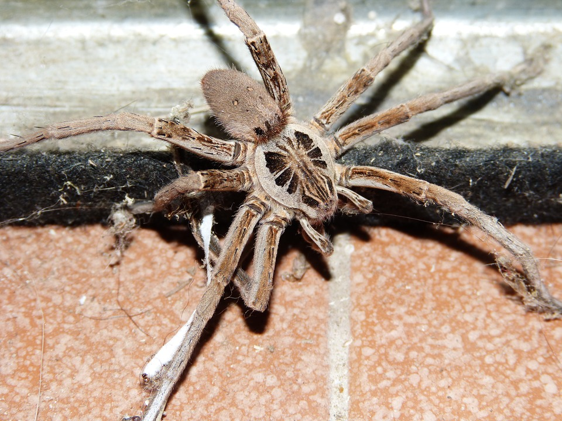

Animal
I like animals very much. Since I was young, I have wanted to raise monkeys, mice, and snakes. But I sometimes go to the zoo because I can't raise them.
Especially, I like a zoo where I can touch animals. Also, I like animals so much that I watch animal videos on YouTube every day.
Macaroon
Makarong is France's representative sugar and product. A confection made of egg whites, white sugar, almond powder and almond flour,
with meringue as the main ingredient, and in a circular shape and small enough to fit one's hands. I like macaron very much. But I can't eat much because it's expensive.
Pink

|

|
I like pink. So many of my things are pink like my blanket, pillow, writing instrument, notebook and so on.
Even clothes like pink. Since I like pink, I like Hello Kitty, which is pink.Most of my things are pink or Hello Kitty.
HATE
Insect
|  |
I really hate bugs. Especially, I hate insects with many legs. When I was young, I used to dream of getting a bug bridge even when I had nightmares.
I can't get anywhere near there when there are bugs. I'm so scared and hateful just looking at pictures of bugs.
Cold
I hate cold so much so I hate winter. Because I am too weak in the cold, and my winter clothes are too thick, so I feel stuffy.
I'm from Daegu, so I can't get used to the cold in Seoul. It's still April, but it's still cold. I hope spring doesn't come soon and get cold.
Exercise
I hate sports. These days, it is harder to exercise because I don't like sports because I don't like it.
So I usually hate to use stairs and I hate to walk. But from this vacation, I think I should exercise for my health.